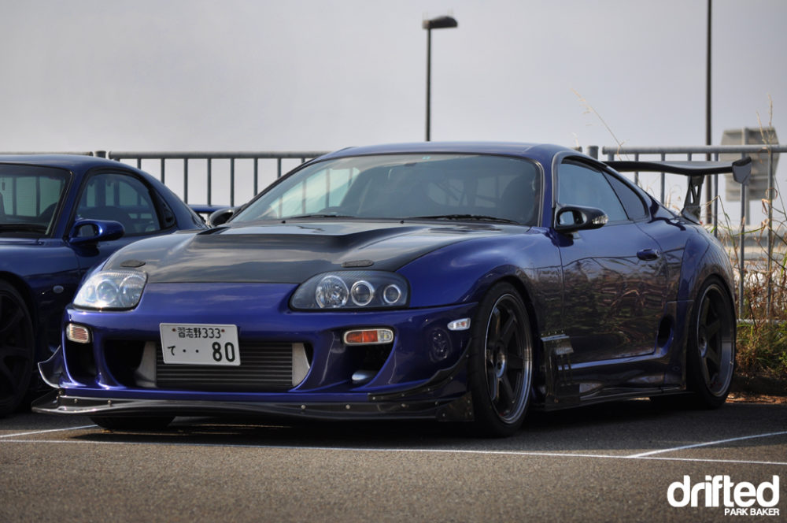

¿Cuales fueron los prinicpales modelos JDM?
La historia de los carros JDM se remonta a la década de 1960, cuando los fabricantes japoneses comenzaron a exportar automóviles a otros países. Sin embargo, fue durante las décadas de 1980 y 1990 cuando la popularidad de los JDM alcanzó su punto máximo. Los vehículos japoneses, como el Toyota Supra, el Nissan Skyline GT-R y el Honda NSX, se convirtieron en símbolos de innovación y desempeño.

1. Nissan
Nissan es otra marca legendaria en el mundo JDM, con una historia de innovación y excelencia en ingeniería. El Nissan Skyline GT-R es quizás el modelo más venerado de la marca y ha alcanzado un estatus de culto. Con su tracción en las cuatro ruedas y su poderoso motor turboalimentado, el Skyline GT-R estableció nuevos estándares de rendimiento en la industria automotriz. Otro modelo emblemático es el Nissan Silvia, conocido por su manejo ágil y su popularidad en la escena de la personalización automotriz.

2.Toyota
Toyota, una de las marcas automotrices más grandes del mundo, ha dejado una marca profunda en la historia de los carros JDM. Entre los modelos más icónicos se encuentra el Toyota Supra, famoso por su diseño deportivo y su motor turboalimentado. El Supra se ganó rápidamente una reputación como uno de los mejores automóviles de alto rendimiento de su tiempo. Otro modelo destacado es el Toyota Celica, un coupé deportivo que combinaba estilo y rendimiento en un paquete asequible.
